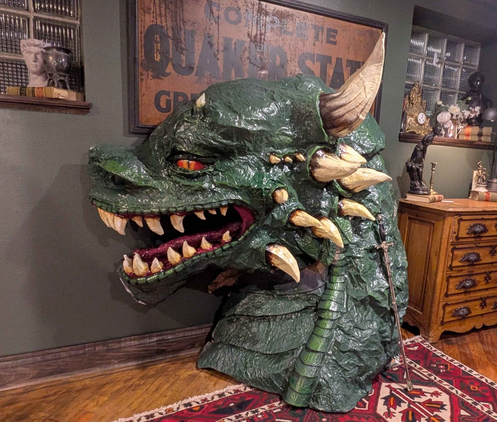

How to make an interlocking slice sculpture
Two families of flat slices cross at right angles and slot into each other, like an egg crate. People also call it a waffle or a slice form. Cardboard works well for big pieces, and plywood or acrylic for strong ones. This guide uses Lamina, a free laser slicer that runs in your browser.
Which shapes work
One family of slices goes in from above and the other from below. So each slice must have a straight way in. A torus works, because every vertical line meets its tube once. A head with ears above the skull on the same lines does not, and Lamina's insertion check says so. For such a shape, use stacked slices or radial slices instead.
Steps
- Open Lamina in your browser and load the model.
- Set the size of the finished piece.
- Pick Interlocked slices. Choose the assembly axis, then the count or spacing of each family.
- Pick the material and type the thickness you measured.
- Set the slot offset for the fit you want: a tighter slot for a press fit, a wider slot for a loose fit.
- For a CNC router, pick router as the machine. Dog-bone relief puts the round bit in every slot corner, and the parts lie twice the bit apart on the sheet.
- Read the Checks tab. Where a region would float, auto-fix adds a crossing slice.
- Export the SVG or DXF and cut the sheets.
- Slide the slices of one family in from above and the other from below.
Why the slots fit
Lamina calculates the depth of each slot at each crossing from the mesh itself. So a hollow or an uneven shape notches correctly, where older tools left the slices loose. You can also set the notch ratio and the flare at the mouth of the slot, rotate the grid, and add extra slices at the places you choose.

Made with interlocked slices

Giant dragon head
by jarkien
More in the gallery. For rings in three directions on a sphere, an egg or a box, see the band lattice.